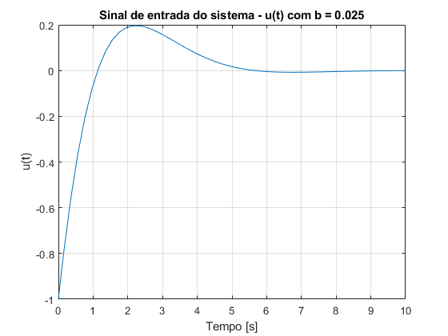
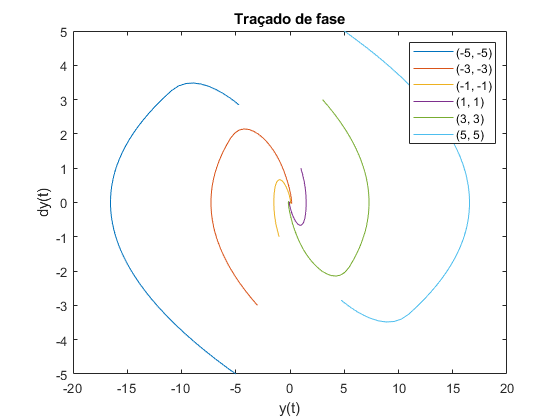

Contents
% LAB 2 - MSIM % Autor: Bernardo Rocha & Vasco Araújo % Número de Aluno: 89867 & 90817 % Abril 2020; Última Revisão: 29/04/2020
Exercício 2
clear close all clc t = linspace(-1, 1, 100); %%%%%%%%%%%%%%%%%%%%%%%%%%%%%%%%%%%%%%%%%%%%%%%%%%%%%%%%%%%%%%% beta = 0.1; pb = generatePulse(t, beta); plot(t, pb) hold on grid on %%%%%%%%%%%%%%%%%%%%%%%%%%%%%%%%%%%%%%%%%%%%%%%%%%%%%%%%%%%%%%% beta = 0.5; pb = generatePulse(t, beta); plot(t, pb) %%%%%%%%%%%%%%%%%%%%%%%%%%%%%%%%%%%%%%%%%%%%%%%%%%%%%%%%%%%%%%%%%%%% beta = 0.9; pb = generatePulse(t, beta); plot(t, pb) ylim([0 1.3]) xlim([-1 1]) xlabel('Tempo [s]') ylabel('Pb(t)') legend('Beta = 0.1', 'Beta = 0.5', 'Beta = 0.9') title('Geração do impulso protótipo p_\beta(t)')
Função generatePulse
type('generatePulse.m');
function [Pb] = generatePulse(t, beta)
for i = 1: length(t)
if t(i) <= - beta/2 - 0.5 %1ª secçao
Pb(i) = 0;
elseif t(i) > - beta/2 - 0.5 && t(i) <= -0.5 %2ª secção
Pb(i) = (2*(t(i)^2)+2*t(i)+0.5)/(beta^2) + (2*t(i)+1)/beta + 0.5;
elseif t(i) > -0.5 && t(i) < beta/2 - 0.5 %3ª secção
Pb(i) = -(2*(t(i)^2)+2*t(i)+0.5)/(beta^2) + (2*t(i)+1)/beta + 0.5;
elseif t(i) >= beta/2 - 0.5 && t(i) <= - beta/2 + 0.5 %4ª secção
Pb(i) = 1;
elseif t(i) > - beta/2 + 0.5 && t(i) < 0.5 %5ª secção
Pb(i) = (-2*(t(i)^2)+2*t(i)-0.5)/(beta^2) + (-2*t(i)+1)/beta + 0.5;
elseif t(i) >= 0.5 && t(i) < beta/2 + 0.5 %6ª secção
Pb(i) = (2*(t(i)^2)-2*t(i)+0.5)/(beta^2) + (-2*t(i)+1)/beta + 0.5;
elseif t(i) >= beta/2 + 0.5 %7ª secção
Pb(i) = 0;
end
end
end
Exercício 3
clear close all clc %declaração de variáveis T = 5; alpha = 1; U1 = 1; U2 = 2; n1 = 100; n2 = 100; %%%%%%%%%%%%%%%%%%%%%%%%%%%%%%%%%%%%%%%%%%%%%%%%%%% beta = 0.1; [ut, t] = generateU(T, alpha, beta, U1, U2, n1, n2); plot(t, ut); hold on grid on %%%%%%%%%%%%%%%%%%%%%%%%%%%%%%%%%%%%%%%%%%%%%%%%%%%% beta = 0.5; [ut, t] = generateU(T, alpha, beta, U1, U2, n1, n2); plot(t, ut); %%%%%%%%%%%%%%%%%%%%%%%%%%%%%%%%%%%%%%%%%%%%%%%%%%%% beta = 0.9; [ut, t] = generateU(T, alpha, beta, U1, U2, n1, n2); plot(t, ut); ylim([-U1-1 U2+1]) xlim([0 T]) xlabel('Tempo [s]') ylabel('u(t)') legend('Beta = 0.1', 'Beta = 0.5', 'Beta = 0.9') title('Geraçáo de u(t) a partir do impulso protótipo p_\beta(t)')
Função generateU
type('generateU.m');
function [ut, t] = generateU(T,alpha,beta,U1,U2,n1,n2) T_1 = T/(alpha + 1); T_2 = (T_1*alpha); miu_1 = T_1/(1 + beta); miu_2 = T_2/(1 + beta); n_total = n1 + (n2-1); t = linspace(0, T, n_total); pb1 = generatePulse((t-(T_1/2))/miu_1, beta); u1 = -U1*pb1; pb2 = generatePulse((t-T_1-(T_2/2))/miu_2, beta); u2 = U2*pb2; ut = u1 + u2; end
Exercício 7
clear close all clc %inicializar variáveis b = 0; beta = 1; n1 = 100; n2 = 100; for alpha = 0.5:0.5:1.5 if alpha <= 1 T = sqrt(2*(1+beta)*(1+alpha)/alpha); else T = sqrt(2*(1+beta)*(1+alpha)); end T1 = T/(1+alpha); U1 = 2*(1+beta)/((T1^2)*(1+alpha)); U2 = U1/alpha; [ut, t] = generateU(T,alpha,beta,U1,U2,n1,n2); figure(1); plot(t, ut); hold on; grid on; u_entrada.time = t'; u_entrada.signals.values = ut'; stop_time = T; sim7 = sim('system7'); figure(2); plot(sim7.tout, sim7.y_saida); hold on; grid on; figure(3); plot(sim7.tout, sim7.d_y_saida); hold on; grid on; %sistema com b = 0.025 b = 0.025; sim7_2 = sim('system7'); figure(4); plot(sim7_2.tout, sim7_2.y_saida); hold on; grid on; figure(5); plot(sim7_2.tout, sim7_2.d_y_saida); hold on; grid on; %repor o valor de b b = 0; end figure(1) xlabel('Tempo [s]') ylabel('u(t)') legend('alpha = 0.5', 'alpha = 1', 'alpha = 1.5', 'location', 'southeast'); title('Sinal de entrada do sistema - u(t)'); figure(2) xlabel('Tempo [s]') ylabel('y(t)') legend('alpha = 0.5', 'alpha = 1', 'alpha = 1.5'); title('Evolução da posição do sistema - y(t) com b = 0') figure(3) xlabel('Tempo [s]') ylabel('dy(t)') legend('alpha = 0.5', 'alpha = 1', 'alpha = 1.5', 'location', 'southeast'); title('Evolução da velocidade do sistema - dy(t) com b = 0') figure(4) xlabel('Tempo [s]') ylabel('y(t)') legend('alpha = 0.5', 'alpha = 1', 'alpha = 1.5'); title('Evolução da posição do sistema - y(t) com b = 0.025'); figure(5) xlabel('Tempo [s]') ylabel('dy(t)') legend('alpha = 0.5', 'alpha = 1', 'alpha = 1.5', 'location', 'southeast'); title('Evolução da velocidade sistema - dy(t) com b = 0.025');

Na alínea 6 foi calculado que o valor de que minimizava o T era . Como se pode observar nas Figuras 2 e 4, o cálculo teórico confirma-se pois y(t) atinge o valor desejado de 0 mais rapidamente para estas condições. Com o sistema perturbado, verifica-se que este sistema não atinge o valor pretendido.
Sistema de SIMULINK 7
system7
Exercício 8
clear close all clc test.y = linspace(-10,10,100); test.y_dot = linspace(-10,10,100); for n = 1:length(test.y) for m = 1:length(test.y_dot) u(n,m) = blockFunc8(test.y(n), test.y_dot(m)); end end % curva de comutaçao 2d figure(1); surfc(test.y, test.y_dot, u); view([0 90]) xlabel('y'); ylabel('dy'); title(' u(y, dy) - Curva de comutação'); colorbar shading flat; %curva de comutação 3d figure(2); surfc(test.y, test.y_dot, u); view([46 51]) xlabel('y'); ylabel('dy'); zlabel('u'); title('Geração de u(y, dy)'); shading interp; colorbar;
Função blockFun8
type('blockFunc8.m');
function [u] = blockFunc8(y, y_dot) in_subsys = -y; out_subsys = sign(in_subsys)*sqrt(2*abs(in_subsys)); eq = out_subsys - y_dot; % SIGN BLOCK u = sign(eq); end
Nesta estrutura de controlo os nossos impulsos de entrada são definidos em função da diferença entre a posição do braço e a referência dos sistema. Com isto conseguimos ter um maior controlo da posição do braço para que este se mova para a posição desejada. Temos que a nossa tensão de entrada é influenciada tanto pela posição do nosso braço como pela derivada da posição do mesmo. Neste sistema de controlo, podemos resumir a definição do sinal do impulso a duas perguntas: A posição está acima ou abaixo da referência? A derivada da posição é positiva ou negativa? Com a resposta a estas perguntas, conseguimos definir o sinal de u de forma a que o braço se posicione na referência. Podemos usar um exemplo: Imaginando que o nosso y está abaixo da nossa referência 0, logo temos y < 0. Ao fazer a diferença deste número negativo com 0, passamos a ter um número positivo à entrada de Subsys. Logicamente, à saída de Subsys iremos ter um valor positivo novamente (verificado através da substituição de um x positivo em f(x)). Até agora apenas utilizámos a resposta à primeira pergunta. Questionamos agora: Será que a derivada da posição é positiva ou negativa? Imaginemos que estamos perante o caso de uma derivada negativa. Isto quer dizer que para além da posição do nosso braço se situar abaixo do desejado, este tende a se afastar ainda mais, logo, o que nós queremos é que este faça precisamente o contrário e fique com uma derivada positiva, para que o valor de y cresça em direção à referência. Como para este exemplo temos um valor à saída de Subsys positivo e a nossa derivada tem sinal negativo, a diferença entre estes dois irá dar um valor positivo à saída do somador. O mesmo acontecerá à saída do bloco Sign. Com isto, alterámos o declive da variação da posição y. Após integrar este valor positivo no 1º bloco integrador, constatamos que iremos ter uma derivada positiva, que era aquilo que nós queríamos: ter o nosso y, que está abaixo da referência, a crescer e a aproximar-se de 0.
Exercício 9
clear close all clc %inicialização de variáveis K = 10000; y0 = 1; d_y0 = 0; sim9 = sim('system9'); figure(1) plot(sim9.tout, sim9.ut); hold on grid on figure(2) plot(sim9.tout, sim9.y); hold on grid on figure(3) plot(sim9.tout, sim9.d_y); hold on grid on %fazer traçado de fase da pergunta 5 figure(4) for i = -5:2:5 y0 = i; d_y0 = i; sim9_i = sim('system9'); plot(sim9_i.y, sim9_i.d_y); hold on; end figure(1) xlabel('Tempo [s]') ylabel('u(t)') title('Sinal de entrada do sistema - u(t)'); figure(2) xlabel('Tempo [s]') ylabel('y(t)') title('Evolução da posição do sistema - y(t)') figure(3) xlabel('Tempo [s]') ylabel('dy(t)') title('Evolução da velocidade do sistema - dy(t)') figure(4) xlabel('y(t)') ylabel('dy(t)') leg = legend('(-5, -5)', '(-3, -3)', '(-1, -1)', '(1, 1)', '(3, 3)','(5, 5)'); title(leg, 'Pontos iniciais (y,dy)'); title('Traçado de ')
Na Figura 1 observamos um retângulo a partir do momento em que o estado do sistema converge para a origem. Este fenómeno, chamado , ocorre quando se tem oscilações com frequência e amplitude finitas, causadas quando se tem dinâmicas do sistema a variar muito rapidamente, tão rápido que o próprio sistema não consegue acompanhar. Este fenómeno é prejudicial pois pode causar: pouca precisão no sistema, desgaste das partes mecânicas em movimento e grandes perdas de calor no circuito.
Sistema de SIMULIK 9
system9 %Dentro do bloco Subsys encontra-se um bloco MATLAB Function com a seguinte %função: % function y = fcn(x) % % y = sign(x) * sqrt(2*abs(x)); % % end
Exercício 10
clear close all clc y1 = 4; test.y = linspace(-10,10,100); test.y_dot = linspace(-10,10,100); for n = 1:length(test.y) for m = 1:length(test.y_dot) u(n,m) = blockFunc10(test.y(n), test.y_dot(m), y1); end end % curva de comutaçao 2d figure(1); surfc(test.y, test.y_dot, u); view([0 90]) grid on; xlabel('y'); ylabel('dy'); title(' u(y, dy) - Curva de comutação com y_l = 4'); shading flat; colorbar; %curva de comutaçao 3d figure(2); surfc(test.y, test.y_dot, u); view([46 51]) xlabel('y'); ylabel('dy'); zlabel('u'); title('Geração de u(y, dy) com y_l = 4'); shading interp; colorbar;
Função blockFun10
type('blockFunc10.m');
function [u] = blockFunc10(y, y_dot, y1)
k1 = 1/y1;
k2 = sqrt(2*k1);
in_subsys = -y;
if abs(in_subsys) <= y1
out_subsys = (k1/k2)*in_subsys;
else
out_subsys = sign(in_subsys)*(sqrt(2*abs(in_subsys))-(1/k2));
end
eq = out_subsys - y_dot;
% SIGN BLOCK
u = sign(eq);
end
Esta arquitectura de controlo garante que quando a posição do braço se encontra perto da referência a saída do bloco "Subsys" pode assumir valores que não 1, o que faz com que deixe de haver efeito de ,como podemos observar na Figura 1, em que entre y_l a curva de comutação é linear.
Exercício 11
clear close all clc %inicialização de variáveis b = 0; y1 = 1; k1 = 1/y1; k2 = sqrt(2*k1); y0 = 1; d_y0 = 0; sim11 = sim('system11'); figure(1) plot(sim11.tout, sim11.ut); hold on grid on figure(2) plot(sim11.tout, sim11.y); hold on grid on figure(3) plot(sim11.tout, sim11.d_y); hold on grid on %fazer traçado de fase da pergunta 5 figure(4) for i = -5:2:5 y0 = i; d_y0 = i; sim11_i = sim('system11'); plot(sim11_i.y, sim11_i.d_y); hold on; end %%%%%%%%%%%%%%%%%%%%%%%%%%%%%%%%%%%%%%%%%%%%%%%%%%%%%%%%% %resposta do sistema linear só com a parte de cima do ramo da função sim11_1 = sim('system11_linear'); figure(1) plot(sim11_1.tout, sim11_1.ut); hold on grid on figure(2) plot(sim11_1.tout, sim11_1.y); hold on grid on figure(3) plot(sim11_1.tout, sim11_1.d_y); hold on grid on %%%%%%%%%%%%%%%%%%%%%%%%%%%%%%%%%%%%%%%%%%%%%%%%%%%%%%%%%%%%%%%%%% %resposta do sistema em malha fechada sem chattering para comparação K = 10; %reduzimos o ganho face ao utilizado na questão 9 para diminuir um pouco %as oscilações de chattering para se poder comparar com o sistema sem chattering de forma mais fidedigna y0 = 1; d_y0 = 0; sim9 = sim('system9'); figure(1) plot(sim9.tout, sim9.ut); hold on grid on figure(2) plot(sim9.tout, sim9.y); hold on grid on figure(3) plot(sim9.tout, sim9.d_y); hold on grid on %%%%%%%%%%%%%%%%%%%%%%%%%%%%%%%%%%%%%%%%%%%%%%%%%%%%%% figure(1) xlabel('Tempo [s]') ylabel('u(t)') title('Sinal de entrada do sistema - u(t) com b = 0'); legend('Sistema malha fechada sem chattering', 'Sistema malha fechada sem chattering linear', 'Sistema malha fechada com chattering', 'location', 'southeast'); figure(2) xlabel('Tempo [s]') ylabel('y(t)') title('Evolução da posição do sistema - y(t) com b = 0') legend('Sistema malha fechada sem chattering', 'Sistema malha fechada sem chattering linear', 'Sistema malha fechada com chattering'); figure(3) xlabel('Tempo [s]') ylabel('dy(t)') title('Evolução da velocidade do sistema - dy(t) com b = 0') legend('Sistema malha fechada sem chattering', 'Sistema malha fechada sem chattering linear', 'Sistema malha fechada com chattering'); figure(4) xlabel('y(t)') ylabel('dy(t)') leg = legend('(-5, -5)', '(-3, -3)', '(-1, -1)', '(1, 1)', '(3, 3)','(5, 5)'); title(leg, 'Pontos iniciais (y,dy)'); title('Traçado de fase do sistema malha fechada sem chattering')

Olhando para o sistema de controlo sem , verificamos que o sinal de controlo tem uma curva bastante mais suave e já nao tem oscilações, como seria de esperar. No entanto esta arquitectura tem um trade-off, que é facto de o tempo que demora para a posição do braço tender para o equilíbrio ser consideravelmente maior, pois no nosso exemplo o sistema com estabilizava para t = 2.0211 s, enquanto que o com apenas estabiliza nos 7.5612 s. Podemos também observar a resposta do sistema com um controlo linear, alterando a função para apenas o ramo superior e retirando o bloco de saturação e verificamos que, apesar de o sistema estabilizar à mesma, apresenta uma maior sobre-elevação no sinal de controlo e uma maior oscilação e tempo de estabilização na posição e na velocidade.
Sistema de SIMULINK 11
system11 %Dentro do bloco Subsys encontra-se um bloco MATLAB Function com a seguinte %função: % function y = fcn(x) % y1 = 1; % k1 = 1/y1; % k2 = sqrt(2*k1); % % if abs(x) <= y1 % y = (k1/k2)*x; % elseif abs(x) > y1 % y = sign(x) * (sqrt(2*abs(x))-(1/k2)); % else % y = 0; % end % % end
Exercício 12
clear close all clc %inicializar variáveis b = 0.025; y1 = 1; k1 = 1/y1; k2 = sqrt(2*k1); y0 = 1; d_y0 = 0; sim12 = sim('system11'); figure(1) plot(sim12.tout, sim12.ut); hold on grid on figure(2) plot(sim12.tout, sim12.y); hold on grid on figure(3) plot(sim12.tout, sim12.d_y); hold on grid on %fazer traçado de fase da pergunta 5 figure(4) for i = -5:2:5 y0 = i; d_y0 = i; sim12_i = sim('system11'); plot(sim12_i.y, sim12_i.d_y); hold on; end figure(1) xlabel('Tempo [s]') ylabel('u(t)') title('Sinal de entrada do sistema - u(t) com b = 0.025'); figure(2) xlabel('Tempo [s]') ylabel('y(t)') title('Evolução da posição do sistema - y(t) com b = 0.025') figure(3) xlabel('Tempo [s]') ylabel('dy(t)') title('Evolução da velocidade do sistema - dy(t) com b = 0.025') figure(4) xlabel('y(t)') ylabel('dy(t)') legend('(-5, -5)', '(-3, -3)', '(-1, -1)', '(1, 1)', '(3, 3)','(5, 5)'); title('Traçado de fase') 
Comparando com as simulações efectuadas em 7) com b = 0.025, concluímos que o sistema em cadeia fechada é bastante mais robusto que o de cadeia aberta, pois em cadeia aberta a posição e a velocidade do sistema com atrito nunca chegavam ao ponto de equilíbrio pretendido, enquanto que em cadeia fechada o sistema estabilizava para o equilíbrio.
Exercício 13
clear close all clc %inicializar variáveis b = 0; y1 = 0.1; k1 = 1/y1; k2 = sqrt(2*k1); y0 = 0; d_y0 = 0; %1ª referencia sim13 = sim('system13'); figure(1) plot(sim13.tout, sim13.y); hold on grid on plot(sim13.tout, sim13.reference); %%%%%%%%%%%%%%%%%%%%%%%%%%%%%%%%%%%%%%%%%%%%%%% figure(1) xlabel('Tempo [s]') ylabel('y(t)') title('Evolução da posição do sistema') legend('y(t)', 'Sinal de referência'); ylim([-1 5]);
Sistema de SIMULINK 13
system13 %Dentro do bloco Subsys encontra-se um bloco MATLAB Function com a mesma %função do sistema de Simulink system11
Como podemos observar, o sisema de controlo segue as referências não nulas com bastante fidelidade, apesar de ter um pouco de atraso a acompanhar a referência quando esta muda de amplitude bruscamente.